前言
Shuffle 操作在 Spark 中很常见，往往用于聚合或重新分区等场景。Shuffle 操作特别费时，会造成极大的磁盘 IO 和网络 IO，经常是整个任务的性能瓶颈。所以了解下 shuffle 的原理很重要，可以根据其原理进行调优。本篇介绍 shuffle 数据读取的原理。
Shuffle 简介
如下图展示了一个 shuffle 操作，有两个 Map 节点，为两个 Reduce 节点生成 shuffle 数据，数据保存在 Map 节点的磁盘上。这里共有四份数据，每份数据通过 mapId 和 reduceId 就可以唯一的确认。
上图只是展示了一个 Shuffle 操作，如果一个任务有多个 Shuffle，还需要 shuffleId 才能唯一确认数据。ShuffleBlockId 包含 shuffleId，mapId 和 reduceId，在请求数据中会用到它。
读取流程
reduce 端读取 shuffle 数据的流程，涉及到多个类，比较复杂。
sequenceDiagram
participant ShuffleReader
participant MapOutputTracker
participant ShuffleBlockFetcherIterator
participant OneForOneBlockFetcher
participant TransportChannelHandler
participant NettyBlockRpcServer
participant TransportRequestHandler
ShuffleReader->>+MapOutputTracker: 发送ShuffleID，获取数据位置
MapOutputTracker-->>-ShuffleReader: 返回位置信息
ShuffleReader->>+ShuffleBlockFetcherIterator: 根据数据位置和大小，构建请求
ShuffleBlockFetcherIterator->>+OneForOneBlockFetcher: 发送请求
OneForOneBlockFetcher->>+TransportChannelHandler: 发送OpenBlocks请求
TransportChannelHandler->>+NettyBlockRpcServer: 处理OpenBlocks请求
NettyBlockRpcServer-->>-TransportChannelHandler: 返回streamId
TransportChannelHandler-->>-OneForOneBlockFetcher: 返回StreamHandle响应
OneForOneBlockFetcher->>+TransportChannelHandler: 发送Stream或Chunk请求
TransportChannelHandler->>+TransportRequestHandler: 处理Stream或Chunk请求
TransportRequestHandler-->>-TransportChannelHandler: 返回数据
TransportChannelHandler-->>-OneForOneBlockFetcher: 返回数据
OneForOneBlockFetcher-->>-ShuffleBlockFetcherIterator: 返回数据
ShuffleBlockFetcherIterator-->>-ShuffleReader: 返回数据
- shuffle 数据的位置获取，从MapOutputTracker获取数据所在的位置。
- ShuffleBlockFetcherIterator 根据 shuffle 数据的位置，分为本地和远程。远程数据需要构建请求。
- OneForOneBlockFetcher 负责发送远程请求，它需要向请求OpenBlocks，会收到StreamHandler响应。
- NettyBlockRpcServer 负责处理OpenBlocks请求，会根据 ShuffleBlockId 列表，找到对应的数据位置，准备好数据。最后生成streamId 和 chunkId 列表，这样客户端通过 streamId 和 chunkId 就可以获取数据了。
- OneForOneBlockFetcher 接收到StreamHandler响应后。如果指定了要将数据存储到文件，那么就发送Stream请求。否则发送Chunk请求，数据会保存在内存中。
- TransportRequestHandler 处理 Stream 或Chunk 请求，会通过 StreamManager 返回数据。
生成请求
首先根据 shuffle 数据所在的位置，分为本地数据和远程数据。本地数据直接从文件中即可读取，而远程数据需要通过网络传输。ShuffleBlockFetcherIterator 作为数据迭代器，会先返回本地数据，然后返回远程数据。这样也就减少了等待远程数据的传输时间。
生成远程请求
因为数据可能分配在多个节点上，为了提高传输的效率，需要合并相同节点的数据请求，但是为了不影响稳定性，一次请求又不能返回太多数据。下面详细讲述了实现的原理。
首先根据数据的所在节点进行分组。然后将组里的数据，根据大小进一步分组。一个请求包包含的数据总和，基本控制在一定大小。这里举个例子说明，假设有多份数据，并且控制大小为100MB。
| 数据名称 | 位置 | 大小 |
|---|---|---|
| A1 | A | 80MB |
| A2 | A | 40MB |
| A3 | A | 50MB |
| B1 | B | 120MB |
结果会生成下列三个请求，
| 请求ID | 数据列表 |
|---|---|
| 0 | A1, A2 |
| 1 | A3 |
| 2 | B1 |
过程解析：
- 首先来看位置 A 的数据，依次遍历它的三份数据 A1，A2，A3，首先 A1 和 A2 的数据大小之和，大于 100MB，所以生成第一个请求。
- 然后只剩下 A3 一份请求在位置 A上，所以生成第二个请求。
- B位置的数据同理，生成第三个请求。
并发请求
上面已经生成了请求，现在如何将其高效率的发送出去。spark 基于 Netty 来实现异步传输的，但是同时还实现了并发的限制：
- 正在发送的请求数，不能超过指定数量，由 spark.reducer.maxReqsInFlight 配置表示，默认 Int.MaxValue，可以认为无限制。
- 正在请求的数据大小总和，不能超过指定数量，由spark.reducer.maxSizeInFlight 配置表示，默认为 48MB。
对于每次请求的方式，也会根据数据的大小有所不同，阈值为 spark.reducer.maxReqSizeShuffleToMem 配置：
- 如果请求的数据比阈值大，spark 会使用 stream 模式请求，也就是将数据存储到文件里。
- 如果请求的数据比阈值小，spark 会使用 chunk 模式请求，也就是将数据存储到内存里。
比较奇怪的，这个阈值默认是 Long.MaxValue，几乎是无限大。如果发生了shuffle 倾斜，这就很容易造成内存溢出了。建议修改配置的值大小，不要超过 Executor 的本地内存大小。如果使用 Yarn 资源调度，可以参考此篇博客 {% post_link spark-on-yarn %} ，了解内存如何分配。
ShuffleClient 类图
ShuffleClient 作为读取远程数据的基类，定义了重要的 fetchBlocks 接口。
{% plantuml %}
@startuml abstract class ShuffleClient class BlockTransferService class NettyBlockTransferService class ExternalShuffleClient class MesosExternalShuffleClient
ShuffleClient <|-- BlockTransferService BlockTransferService <|-- NettyBlockTransferService ShuffleClient <|-- ExternalShuffleClient ExternalShuffleClient <|-- MesosExternalShuffleClient
@enduml
{% endplantuml %}
ShuffleClient表示shuffle 数据的客户端，支持远程读取数据。
BlockTransferService继承ShuffleClient，增加了上传数据。
NettyBlockTransferService继承BlockTransferService， 实现了所有的接口 。
ExternalShuffleClient 实现外部 ShuffleService 的连接，原理参见下篇博客。
发送请求
Shuffle 数据的远程读取由 NettyBlockTransferService 负责，它使用 OneForOneBlockFetcher 实现远程获取。
数据初始化请求
OneForOneBlockFetcher 首先发送 OpenBlocks Rpc 请求，通知服务端。
|
|
服务端为请求的数据生成 streamId 和 chunkId，并且做好数据准备，返回 StreamHandle 响应。
|
|
读取数据
读取数据分为两种模式：
- stream 模式，表示接收的数据会直接存储到文件。
- chunk 模式，表示数据会存到内存里。
stream 模式下的回调函数如下所示，只要有接收到数据，那么就直接执行 onData 方法：
|
|
chunk 模式下的回调函数，它只有将数据全部存储到内存中，才会执行 onSuccess 方法。
|
|
服务端处理 Rpc 请求
服务端是基于 netty 框架实现的，它的核心处理 由 NettyBlockRpcServer 类负责。它继承了RpcHandler，负责处理 OpenBlocks 请求。服务端收到请求后会进行一些准备操作，找到数据的位置并且生成 streamId 和 chunkId 列表，这些都会保存起来。这样客户端下次根据 streamId 和 chunkId 请求数据，服务端就可以直接返回数据了。
|
|
从上面可以看到时调用了 blockManager 的方法，才找到了数据。我们知道 Map 端程序生成的 多份 shuffle 数据，最后都合并成了一个大文件，然后为了方便的找到每份数据的位置，生成了索引文件。blockManager 读取索引文件，根据 reduceId 就可以很快的找到位置。
OneForOneStreamManager 负责数据读取的流管理。之前服务端找到的数据，都会存储到到它这里。然后 OneForOneStreamManager 负责生成唯一递增的 streamId，为每份数据生成唯一的 chunkId。
|
|
服务端处理流请求
流请求由 TransportRequestHandler 负责处理，它也是基于 Netty 框架实现的，原理可以参考这篇博客 {% post_link spark-rpc-protocol %} 。TransportRequestHandler 负责处理 chunk 或 stream 模式的请求，它的原理是调用 OneForOneStreamManager 返回数据。
OneForOneStreamManager 的 openStream 方法处理 stream 请求，getChunk 方法处理 chunk 请求。这些请求都必须按照顺序读取数据。
|
|
客户端合并数据
客户端收到数据后，先会解析数据，然后合并这些多份数据，生成一个迭代器。合并的逻辑比较简单，分为下面三种：
如果没有聚合操作，那么只是简单的合并成一个迭代器。
如果有聚合操作，则调用 Aggregator 方法完成聚合操作。
如果有排序要求，则调用 ExternalSorter 完成排序操作。